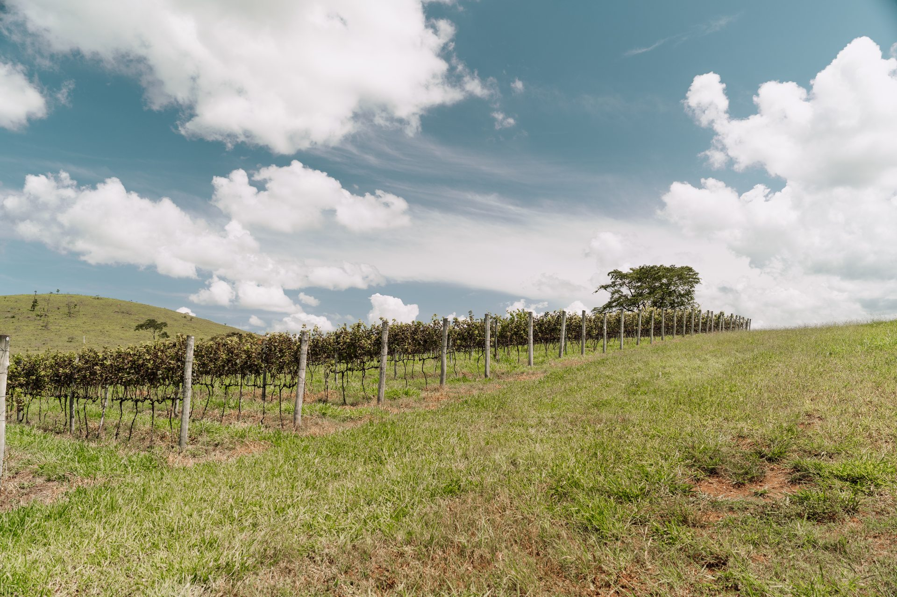
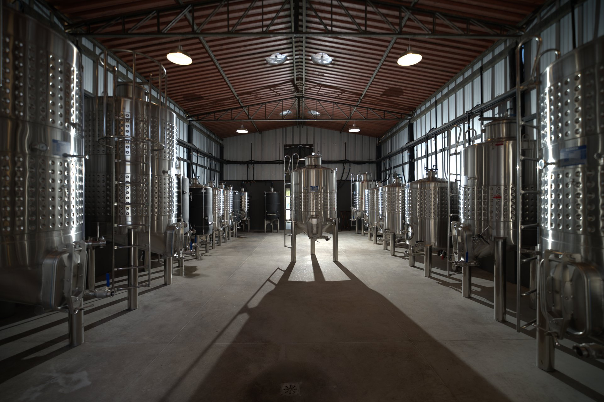
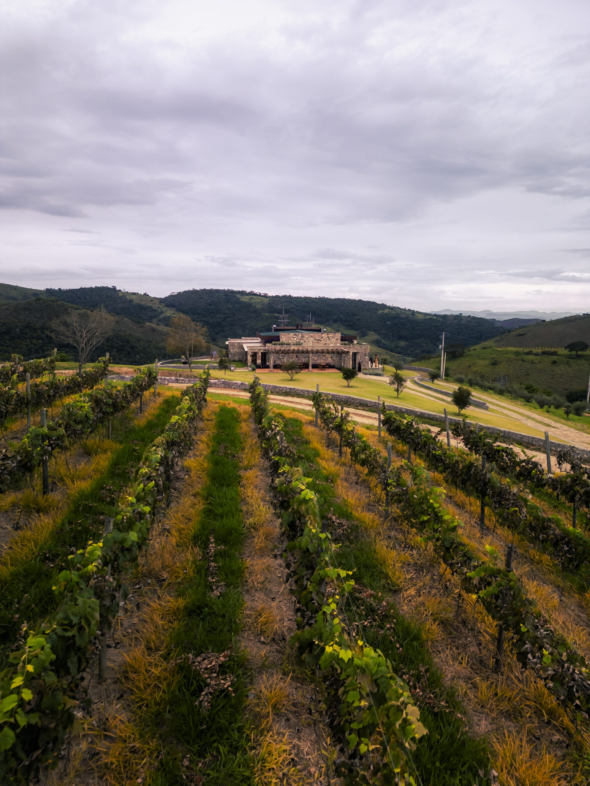
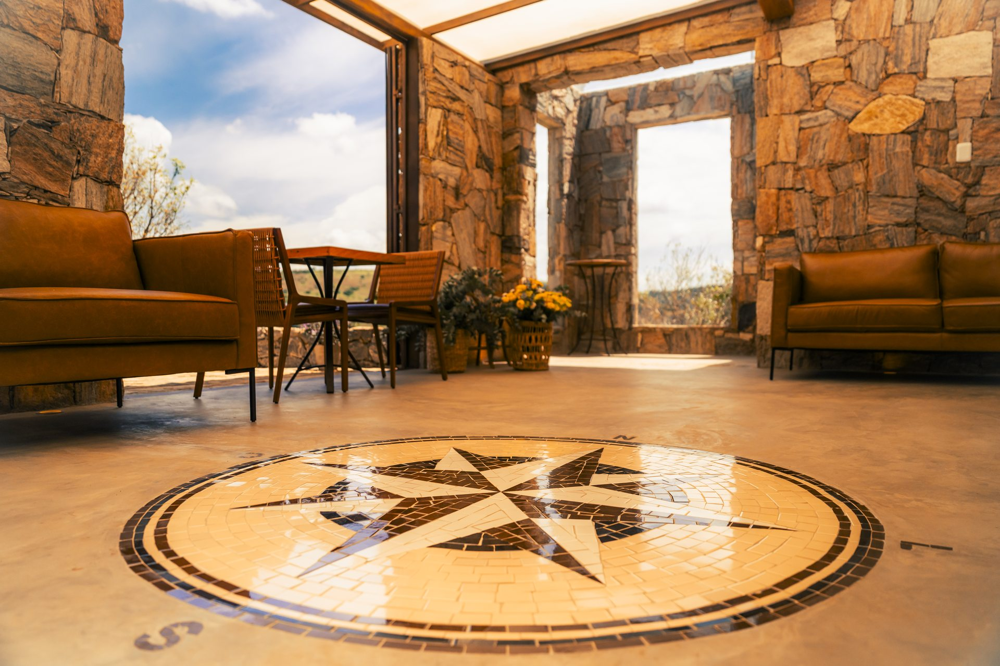
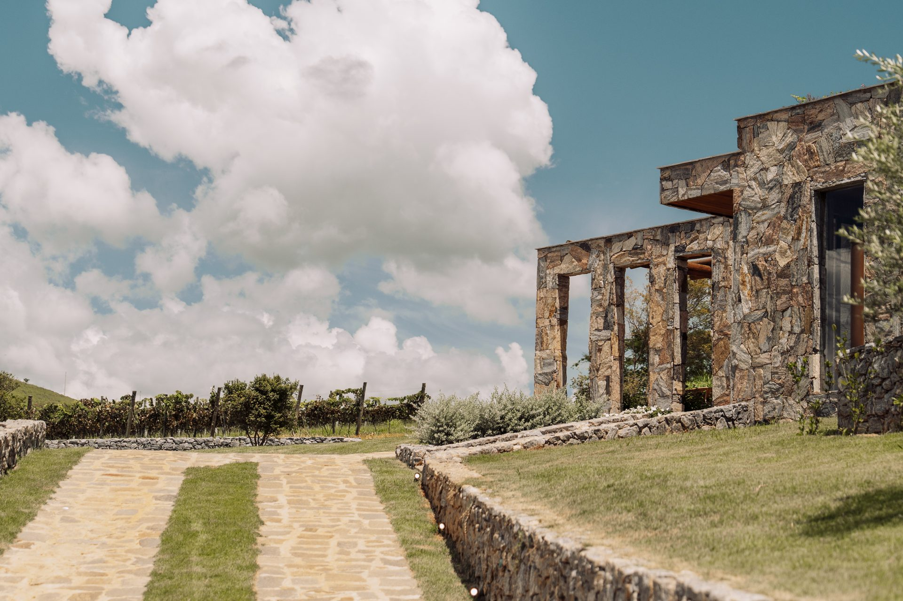
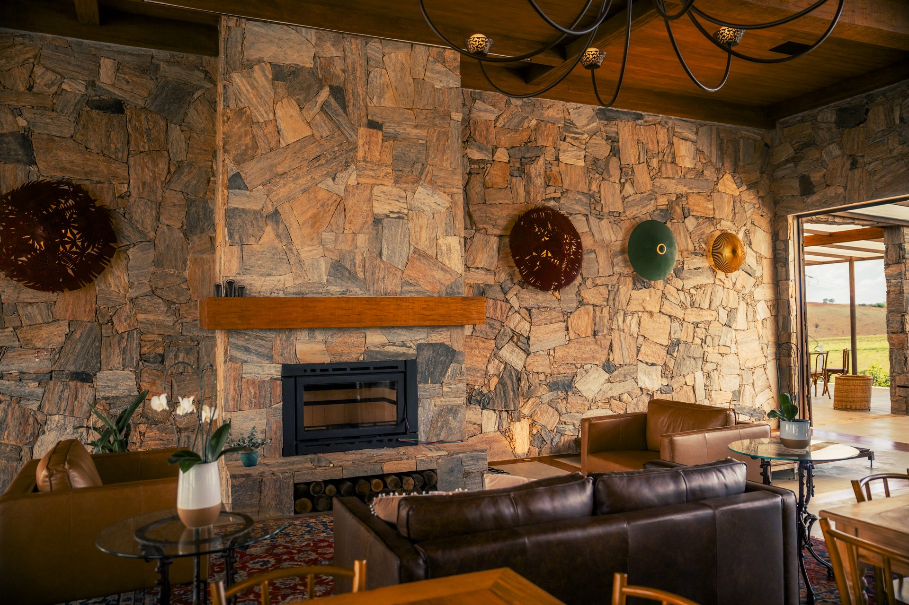
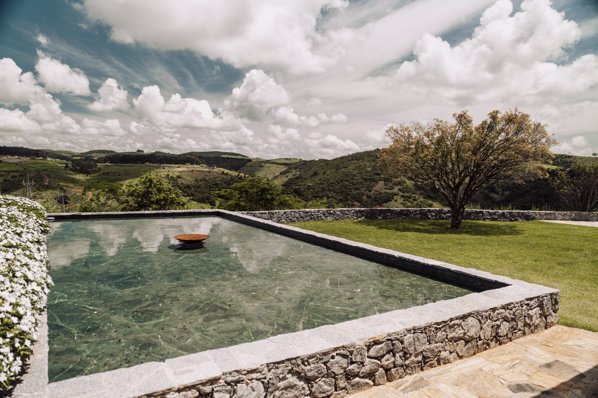
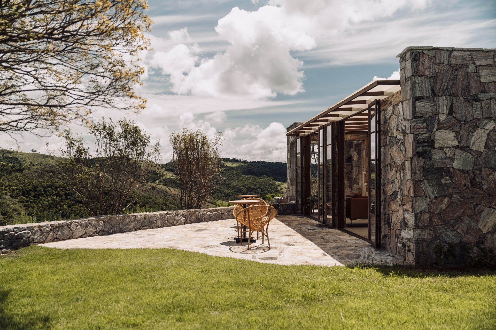

Território e tempo
O convite
A visita guiada é uma forma de viver a história — há também a mesa, o lounge com lareira, o terraço e a piscina voltada para a serra. Um convite para permanecer, no ritmo que cada visitante escolher.
Primeiro momento — Território
O roteiro parte dos parreirais: o cultivo, a dupla poda, o que a colheita de inverno muda no vinho. Cerca de 1h30, com agendamento prévio.


Segundo momento — Degustação orientada
Rótulos da própria Vinícola Arouca — ou suco de uva, sem álcool — harmonizados com queijos e frios da região. Sem menu fixo publicado.

Terceiro momento — Encerramento
Ao final da experiência, é possível adquirir os vinhos degustados diretamente na loja da propriedade.



Depois da mesa


A Casa Vinnus abre suas portas: além dos rótulos da própria vinícola, passa a reunir uma seleção de vinhos convidados de outras vinícolas — o mesmo critério de sempre, agora com um território mais amplo para explorar na taça.
Quinta às 14h · sexta e sábado, 11h e 14h · domingo às 11h.